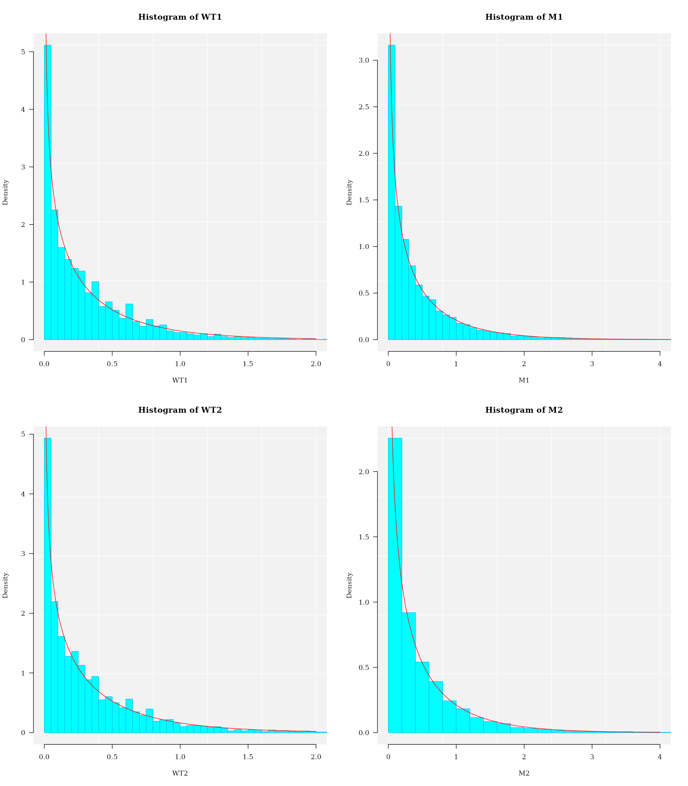

vignettes/MethylIT.Rmd
MethylIT.RmdAbstract
A fast introduction into methylation analysis with Methyl-IT is provided here. The methylome analysis implemented in Methyl-IT based on a signal-detection and machine-learning approach. Vignettes with further examples are available at https://genomaths.github.io/methylit/.
MethylIT is an R package for methylome analysis based on a signal-detection machine learning approach (SD-ML). This approach is postulated to provide greater sensitivity for resolving true signal from the methylation background within the methylome (Sanchez and Mackenzie 2016; Sanchez et al. 2019). Because the biological signal created within the dynamic methylome environment characteristic of plants is not free from background noise, the approach, designated Methyl-IT, includes the application of signal detection theory (Greiner, Pfeiffer, and Smith 2000; Carter et al. 2016; Harpaz et al. 2013; Kruspe et al. 2017). A basic requirement for the application of signal detection is the knowledge of the probability distribution of the background noise, which is used as null hypothesis in the detection of the methylation signal. This probability distribution is, in general, a member of generalized gamma distribution family, and it can be deduced on a statistical mechanical/thermodynamics basis from DNA methylation induced by thermal fluctuations (Sanchez and Mackenzie 2016).
Methyl-IT uses the read counts of methylation called derived from whole-genome bisulfite sequencing (WGBS). Methylome datasets of WGBS are available at Gene Expression Omnibus (GEO DataSets). For the current example, we just load RData files containing the read-counts from several samples. Please, notice that we are using here just a toy data set, which permits us to move us fast on Methyl-IT pipeline.
## ===== Download methylation data from PSU's GitLab ========
url <- paste0("https://git.psu.edu/genomath/MethylIT_examples",
"/raw/master/MethylIT_testing/",
"memoryLine_100k_samples_cg.RData")
temp <- tempfile(fileext = ".RData")
download.file(url = url, destfile = temp)
load(temp)
file.remove(temp); rm(temp, url)
#> [1] TRUE
names(meth_samples)
#> [1] "W_3_1" "W_3_2" "W_3_3" "W_3_4" "W_3_5" "M_3_1" "M_3_2" "M_3_3" "M_3_4"
#> [10] "M_3_5"Download Arabidopsis thaliana TAIR10 gene annotation data
url <- paste0("https://git.psu.edu/genomath/MethylIT_examples",
"/raw/master/MethylIT_testing/",
"Arabidopsis_thaliana.TAIR10.38_only_genes.RData")
temp <- tempfile(fileext = ".RData")
download.file(url = url, destfile = temp)
load(temp)
file.remove(temp); rm(temp, url)
#> [1] TRUETo perform the comparison between the uncertainty of methylation levels from each group of individuals, control \((c)\) and treatment \((t)\), we should estimate the uncertainty variation with respect to the same reference individual on the mentioned metric space. The reason to measure the uncertainty variation with respect to the same reference resides in that even sibling individuals follow an independent ontogenetic development and, consequently, their developments follow independent stochastic processes. The reference individual is estimated with function poolFromGRlist:
The centroid (of methylation levels) of the group control is used as reference samples. Notice that poolFromGRlist function only uses numerical data. Hence, we must specify the columns carrying the read-count data.
idx <- grep("W", names(meth_samples))
ref <- poolFromGRlist(LR = meth_samples[idx], stat = "mean")
#> *** Building a unique GRanges object from the list...
#> *** Building coordinates for the new GRanges object ...
#> *** Strand information is preserved ...
#>
|
| | 0%
|
|============== | 20%
|
|============================ | 40%
|
|========================================== | 60%
|
|======================================================== | 80%
|
|======================================================================| 100%
#> *** Sorting by chromosomes and start positions...
#> *** Building a virtual methylome...To perform the comparison between the uncertainty of methylation levels from each group of individuals, control \((c)\) and treatment \((t)\), the divergence between the methylation levels of each individual is estimated with respect to the reference sample. This is the step with the highest consumption of computing time.
date()
#> [1] "Wed Feb 8 18:36:18 2023"
ptm <- proc.time()
ml_samples <- meth_samples[c("W_3_1","W_3_2","W_3_3","W_3_4","W_3_5",
"M_3_1","M_3_2","M_3_3","M_3_4","M_3_5")]
ml_hd <- estimateDivergence(ref = ref,
indiv = ml_samples,
Bayesian = TRUE,
min.coverage = c(4,4),
and.min.cov = FALSE,
min.meth = 1,
high.coverage = 500,
percentile = 0.999,
verbose = FALSE)
(proc.time() - ptm)[3]/60 # in min
#> elapsed
#> 0.15765
date()
#> [1] "Wed Feb 8 18:36:27 2023"
ml_hd$M_3_1
#> GRanges object with 17782 ranges and 9 metadata columns:
#> seqnames ranges strand | c1 t1 c2 t2
#> <Rle> <IRanges> <Rle> | <numeric> <numeric> <numeric> <numeric>
#> [1] 1 109 + | 3 0 4 0
#> [2] 1 115 + | 3 0 4 0
#> [3] 1 161 + | 4 2 5 1
#> [4] 1 310 + | 6 6 4 12
#> [5] 1 311 - | 1 3 3 2
#> ... ... ... ... . ... ... ... ...
#> [17778] Pt 84348 - | 1 210 2 186
#> [17779] Pt 84350 + | 2 159 0 133
#> [17780] Pt 84351 - | 1 202 2 175
#> [17781] Pt 84353 + | 1 153 0 127
#> [17782] Pt 84354 - | 1 194 0 164
#> p1 p2 TV bay.TV hdiv
#> <numeric> <numeric> <numeric> <numeric> <numeric>
#> [1] 0.855530 0.626396 0.000000 -0.2291345 0.31665411
#> [2] 0.855530 0.626396 0.000000 -0.2291345 0.31665411
#> [3] 0.628985 0.598198 0.166667 -0.0307872 0.00699817
#> [4] 0.491634 0.230045 -0.250000 -0.2615884 1.12163729
#> [5] 0.274564 0.422201 0.350000 0.1476369 0.13205713
#> ... ... ... ... ... ...
#> [17778] 0.00636821 0.01237291 0.00589896 0.00600470 0.199262
#> [17779] 0.01451081 0.00266827 -0.01242236 -0.01184254 0.699579
#> [17780] 0.00661804 0.01312918 0.00637333 0.00651113 0.211982
#> [17781] 0.00871135 0.00279145 -0.00649351 -0.00591989 0.231223
#> [17782] 0.00688828 0.00217286 -0.00512821 -0.00471543 0.238154
#> -------
#> seqinfo: 7 sequences from an unspecified genome; no seqlengthsFunction estimateDivergence returns a list of GRanges objects with the four columns of counts, the information divergence, and additional columns:
Observe that the absolute values \(|TV|\) is an information divergence as well, which is known as total variation distance (widely used in information theory).
A descriptive analysis on the distribution of Hellinger divergences of methylation levels is recommended. After the raw data filtering introduced with estimateDivergence function, some coverage issue could be detected. Notice that Methyl-IT pipeline assumes that the data quality is good enough.
Like in any other statistical analysis, descriptive statistical analysis help us to detect potential issues in the raw data. It is the user responsibility to perform quality check of his/her dataset before start to apply Methyl-IT. Nevertheless, the quality checking of the raw data is not perfect. So, it is healthy to sees for potential issues.
This is an optional step not included in Methyl-IT. It is up to the user to verify the data quality.
## Critical values
critical.val <- do.call(rbind, lapply(ml_hd, function(x) {
hd.95 = quantile(x$hdiv, 0.95)
tv.95 = quantile(abs(x$bay.TV), 0.95)
btv.95 = quantile(abs(x$TV), 0.95)
return(c(tv = tv.95, hd = hd.95, bay.TV = btv.95)
)})
)
critical.val
#> tv.95% hd.95% bay.TV.95%
#> W_3_1 0.3119338 1.003136 0.2410714
#> W_3_2 0.3359854 1.100139 0.2500000
#> W_3_3 0.2881010 1.005780 0.2142857
#> W_3_4 0.3177533 1.041646 0.2380952
#> W_3_5 0.2813523 1.075218 0.2090909
#> M_3_1 0.3806664 1.605878 0.3201389
#> M_3_2 0.3711565 1.649375 0.3000000
#> M_3_3 0.4058102 1.734889 0.3333333
#> M_3_4 0.2175861 1.446732 0.2803030
#> M_3_5 0.2281000 1.120914 0.2976190After the raw data filtering introduced with estimateDivergence function, some coverage issue could be detected.
covr <- lapply(ml_hd, function(x) {
cov <- x$c2 + x$t2
return(cov)
})
do.call(rbind, lapply(covr, function(x) {
q60 <- quantile(x, 0.6)
q9999 <- quantile(x, 0.9999)
idx1 <- which(x >= q60)
idx2 <- which(x <= 500)
q95 <- quantile(x, 0.95)
idx <- intersect(idx1, idx2)
return(c(
round(summary(x)),
q60, quantile(x, c(0.95, 0.99, 0.999, 0.9999)),
num.siteGreater_8 = sum(x >= 8),
q60_to_500 = sum((x >= q60) & (x <= 500)),
num.siteGreater_500 = sum(x > 500)
))})
)
#> Min. 1st Qu. Median Mean 3rd Qu. Max. 60% 95% 99% 99.9%
#> W_3_1 0 8 20 273 494 3933 52 1203.00 2028.40 3630.120
#> W_3_2 0 7 21 330 690 2995 53 1450.75 1983.00 2662.000
#> W_3_3 0 8 22 247 434 4013 52 1059.10 1880.84 3661.840
#> W_3_4 0 7 20 293 603 3630 53 1240.30 1891.52 3261.898
#> W_3_5 0 9 21 257 407 4010 52 1149.00 2112.34 3772.608
#> M_3_1 0 7 18 291 580 3421 49 1259.95 1857.57 3131.095
#> M_3_2 0 8 18 253 421 3843 38 1155.00 2006.47 3641.188
#> M_3_3 0 7 16 284 669 2749 36 1193.00 1597.51 2401.004
#> M_3_4 0 8 19 231 399 3975 39 997.00 1968.61 3681.184
#> M_3_5 0 7 16 354 838 3398 38 1494.00 1989.78 3039.694
#> 99.99% num.siteGreater_8 q60_to_500 num.siteGreater_500
#> W_3_1 3890.672 13546 2713 4414
#> W_3_2 2879.331 12904 2392 4705
#> W_3_3 3944.623 13932 3131 4006
#> W_3_4 3550.063 13386 2520 4675
#> W_3_5 3990.634 14631 3254 4098
#> M_3_1 3378.882 13163 2475 4653
#> M_3_2 3799.164 13577 3241 4014
#> M_3_3 2688.904 12393 2492 4687
#> M_3_4 3935.676 13936 3449 3757
#> M_3_5 3323.190 13105 2494 4771A basic requirement for the application of signal detection is the knowledge of the probability distribution of the background noise. Probability distribution, as a Weibull distribution model, can be deduced on a statistical mechanical/thermodynamics basis for DNA methylation induced by thermal fluctuations (Sanchez and Mackenzie 2016).
gof <- gofReport(HD = ml_hd,
model = c("Weibull2P", "Weibull3P",
"Gamma2P", "Gamma3P"),
column = 9,
output = "all",
alt_models = TRUE,
num.cores = 4L,
task = 2L,
verbose = FALSE
)
#>
|
| | 0%
|
|================== | 25%
|
|=================================== | 50%
|
|==================================================== | 75%
|
|======================================================================| 100%
#>
#> *** Creating report ...
gof$stats
#> w2p_AIC w2p_R.Cross.val w3p_AIC w3p_R.Cross.val g2p_AIC
#> W_3_1 -92604.45 0.9983321 Inf 0 -107319.5
#> W_3_2 -94347.14 0.9985961 Inf 0 -109885.9
#> W_3_3 -96466.50 0.9986545 Inf 0 -114703.9
#> W_3_4 -96546.57 0.9986204 Inf 0 -114453.7
#> W_3_5 -97966.02 0.9985585 Inf 0 -109813.8
#> M_3_1 -106137.75 0.9992455 Inf 0 -127842.1
#> M_3_2 -108524.59 0.9993022 Inf 0 -132209.9
#> M_3_3 -107446.61 0.9993008 Inf 0 -132105.6
#> M_3_4 -124063.33 0.9997121 Inf 0 -119186.2
#> M_3_5 -114904.63 0.9994726 Inf 0 -129744.3
#> g2p_R.Cross.val g3p_AIC g3p_R.Cross.val bestModel
#> W_3_1 0.9992292 Inf 0 g2p
#> W_3_2 0.9993784 Inf 0 g2p
#> W_3_3 0.9995170 Inf 0 g2p
#> W_3_4 0.9994412 Inf 0 g2p
#> W_3_5 0.9991953 Inf 0 g2p
#> M_3_1 0.9997532 Inf 0 g2p
#> M_3_2 0.9997937 Inf 0 g2p
#> M_3_3 0.9998019 Inf 0 g2p
#> M_3_4 0.9995424 Inf 0 w2p
#> M_3_5 0.9997344 Inf 0 g2p
gof$bestModel
#> W_3_1 W_3_2 W_3_3 W_3_4 W_3_5 M_3_1
#> "Gamma2P" "Gamma2P" "Gamma2P" "Gamma2P" "Gamma2P" "Gamma2P"
#> M_3_2 M_3_3 M_3_4 M_3_5
#> "Gamma2P" "Gamma2P" "Weibull2P" "Gamma2P"
par(mfcol = c(2,2))
WT1 = ml_hd$W_3_1$hdiv
pars = coef(gof$nlms$W_3_1)
hist(WT1, 90, freq = FALSE, las = 1, family = "serif",
panel.first={points(0, 0, pch=16, cex=1e6, col="grey95")
grid(col="white", lty = 1)}, family = "serif", col = "cyan1",
border = "deepskyblue", xlim = c(0, 2))
x1 <- seq(0, 2, by = 0.001)
lines(x1, dgamma(x1, shape = pars[1], scale = pars[2]), col = "red")
WT2 = ml_hd$W_3_2$hdiv
pars = coef(gof$nlms$W_3_2)
hist(WT2, 90, freq = FALSE, las = 1, family = "serif",
panel.first={points(0, 0, pch=16, cex=1e6, col="grey95")
grid(col="white", lty = 1)}, family = "serif", col = "cyan1",
border = "deepskyblue", xlim = c(0, 2))
x1 <- seq(0, 2, by = 0.001)
lines(x1, dgamma(x1, shape = pars[1], scale = pars[2]), col = "red")
M1 = ml_hd$M_3_1$hdiv
pars = coef(gof$nlms$M_3_1)
hist(M1, 90, freq = FALSE, las = 1, family = "serif",
panel.first={points(0, 0, pch=16, cex=1e6, col="grey95")
grid(col="white", lty = 1)}, family = "serif", col = "cyan1",
border = "deepskyblue", xlim = c(0, 4))
x1 <- seq(0, 4.5, by = 0.001)
lines(x1, dgamma(x1, shape = pars[1], scale = pars[2]), col = "red")
M2 = ml_hd$M_3_2$hdiv
pars = coef(gof$nlms$M_3_2)
hist(M2, 90, freq = FALSE, las = 1, family = "serif",
panel.first={points(0, 0, pch=16, cex=1e6, col="grey95")
grid(col="white", lty = 1)}, family = "serif", col = "cyan1",
border = "deepskyblue", xlim = c(0, 4))
x1 <- seq(0, 4, by = 0.001)
lines(x1, dgamma(x1, shape = pars[1], scale = pars[2]), col = "red")
The information thermodynamics-based approach is postulated to provide greater sensitivity for resolving true signal from the thermodynamic background within the methylome (Sanchez and Mackenzie 2016). Since the biological signal created within the dynamic methylome environment characteristic of living organisms is not free from background noise, the approach, designated Methyl-IT, includes the application of signal detection theory (Greiner, Pfeiffer, and Smith 2000; Carter et al. 2016; Harpaz et al. 2013; Kruspe et al. 2017). Signal detection is a critical step to increase sensitivity and resolution of methylation signal by reducing the signal-to-noise ratio and objectively controlling the false positive rate and prediction accuracy/risk.
The first estimation in our signal detection step is the identification of the cytosine sites carrying potential methylation signal \(PS\). The methylation regulatory signal does not hold the theoretical distribution and, consequently, for a given level of significance \(\alpha\) (Type I error probability, e.g. \(\alpha = 0.05\)), cytosine positions \(k\) with information divergence \(H_k >= H_{\alpha = 0.05}\) can be selected as sites carrying potential signals \(PS\). The value of \(\alpha\) can be specified. For example, potential signals with \(H_k > H_{\alpha = 0.01}\) can be selected. For each sample, cytosine sites are selected based on the corresponding fitted theoretical distribution model estimated in the previous step.
ps <- getPotentialDIMP(LR = ml_hd,
nlms = gof$nlms,
div.col = 9L,
tv.col = 8L,
tv.cut = 0.25,
dist.name = gof$bestModel)
ps$M_3_1
#> GRanges object with 558 ranges and 10 metadata columns:
#> seqnames ranges strand | c1 t1 c2 t2
#> <Rle> <IRanges> <Rle> | <numeric> <numeric> <numeric> <numeric>
#> [1] 1 511 + | 10 5 4 8
#> [2] 1 5459 + | 6 2 2 5
#> [3] 1 17641 - | 5 1 1 2
#> [4] 1 18106 - | 9 0 2 1
#> [5] 1 24196 + | 6 14 16 0
#> ... ... ... ... . ... ... ... ...
#> [554] 5 93916 - | 0 6 5 3
#> [555] 5 94024 + | 0 10 3 2
#> [556] 5 94054 + | 7 2 0 4
#> [557] 5 94055 - | 5 1 1 5
#> [558] 5 94058 - | 6 0 4 2
#> p1 p2 TV bay.TV hdiv wprob
#> <numeric> <numeric> <numeric> <numeric> <numeric> <numeric>
#> [1] 0.650294 0.291535 -0.333333 -0.358759 1.91758 3.24985e-02
#> [2] 0.712218 0.237111 -0.464286 -0.475107 2.04140 2.70927e-02
#> [3] 0.773595 0.228468 -0.500000 -0.545127 1.64587 4.86429e-02
#> [4] 0.942954 0.396115 -0.333333 -0.546839 2.32267 1.79839e-02
#> [5] 0.303585 0.862793 0.700000 0.559208 6.73007 3.88975e-05
#> ... ... ... ... ... ... ...
#> [554] 0.0505441 0.4890867 0.625000 0.438543 2.30405 0.01847590
#> [555] 0.0320215 0.4222008 0.600000 0.390179 2.10990 0.02450879
#> [556] 0.7412423 0.0520884 -0.777778 -0.689154 4.10998 0.00142952
#> [557] 0.7735955 0.1520139 -0.666667 -0.621582 3.06476 0.00620988
#> [558] 0.9182058 0.4866520 -0.333333 -0.431554 1.77271 0.04026507
#> -------
#> seqinfo: 7 sequences from an unspecified genome; no seqlengthsLaws of statistical physics can account for background methylation, a response to thermal fluctuations that presumably functions in DNA stability (Sanchez and Mackenzie 2016; Sanchez et al. 2019). True signal is detected based on the optimal cutpoint (López-Ratón et al. 2014).
The need for the application of (what is now known as) signal detection in cancer research was pointed out by Youden in the midst of the last century (Youden 1950). In the next example, the simple cutpoint estimation available in Methyl-IT is based on the application of Youden index (Youden 1950). Although cutpoints are estimated for a single variable, the classification performance can be evaluated for several variables and applying different model classifiers. A optimal cutpoint distinguishes disease stages from healthy individual. The performance of this classification is given in the output of function estimateCutPoint.
A model classifier can be requested for further predictions and its classification performance is also provided. Below, the selected model classifier is a quadratic discriminant analysis (QDA) (classifier1 = “qda”, clas.perf = TRUE). Four predictor variables are available: the Hellinger divergence of methylation levels (hdiv), total variation distance (TV, absolute difference of methylation levels), relative position of cytosine site in the chromosome (pos), and the logarithm base two of the probability to observe a Hellinger divergence value \(H\) greater than the critical value \(H_{\alpha = 0.05}\) (values given as probabilities in object PS, wprob).
Notice that the cutpoint can be estimated for any of the two currently available information divergences: Hellinger divergence (div.col = 9) or the total variation distance (with Bayesian correction, div.col = 8).
### Cutpoint estimated using a model classifier
cutpoint <- estimateCutPoint(LR = ps,
simple = FALSE,
div.col = 9,
control.names = c("W_3_1","W_3_2","W_3_3",
"W_3_4","W_3_5"),
treatment.names = c("M_3_1","M_3_2","M_3_3",
"M_3_4","M_3_5"),
column = c(hdiv = TRUE, bay.TV = TRUE,
wprob = TRUE, pos = TRUE),
classifier1 = "logistic", n.pc = 4,
classifier2 = "pca.qda",
center = TRUE,
scale = TRUE,
clas.perf = TRUE,
verbose = FALSE
)
cutpoint$cutpoint
#> [1] 1.018108
cutpoint$testSetPerformance
#> Confusion Matrix and Statistics
#>
#> Reference
#> Prediction CT TT
#> CT 391 0
#> TT 22 696
#>
#> Accuracy : 0.9802
#> 95% CI : (0.9701, 0.9875)
#> No Information Rate : 0.6276
#> P-Value [Acc > NIR] : < 2.2e-16
#>
#> Kappa : 0.9571
#>
#> Mcnemar's Test P-Value : 7.562e-06
#>
#> Sensitivity : 1.0000
#> Specificity : 0.9467
#> Pos Pred Value : 0.9694
#> Neg Pred Value : 1.0000
#> Prevalence : 0.6276
#> Detection Rate : 0.6276
#> Detection Prevalence : 0.6474
#> Balanced Accuracy : 0.9734
#>
#> 'Positive' Class : TT
#>
cutpoint$testSetModel.FDR
#> [1] 0Differentially methylated positions (DMPs) can be now identified using selectDIMP function
dmps <- selectDIMP(ps, div.col = 9, cutpoint = cutpoint$cutpoint)
data.frame(dmps =unlist(lapply(dmps, length)))
#> dmps
#> W_3_1 354
#> W_3_2 342
#> W_3_3 303
#> W_3_4 383
#> W_3_5 277
#> M_3_1 558
#> M_3_2 450
#> M_3_3 471
#> M_3_4 161
#> M_3_5 252Differentially methylated genes (DMGs) are estimated from group comparisons for the number of DMPs on gene-body regions between control and treatment.
Function getDIMPatGenes is used to count the number of DMPs at gene-body. Nevertheless, it can be used for any arbitrary specified genomic region as well. The operation of this function is based on the ‘findOverlaps’ function from the ‘GenomicRanges’ Bioconductor R package. The ‘findOverlaps’ function has several critical parameters like, for example, ‘maxgap’, ‘minoverlap’, and ‘ignore.strand’. In our function getDIMPatGenes, except for setting ignore.strand = TRUE and type = “within”, we preserve the rest of default ‘findOverlaps’ parameters. In this case, these are important parameter settings because the local mechanical effect of methylation changes on a DNA region where a gene is located is independent of the strand where the gene is encoded. That is, methylation changes located in any of the two DNA strands inside the gene-body region will affect the flexibility of the DNA molecule (Choy et al. 2010; Severin et al. 2011).
nams <- names(dmps)
dmps_at_genes <- getDIMPatGenes(GR = dmps, GENES = genes, ignore.strand = TRUE)
dmps_at_genes <- uniqueGRanges(dmps_at_genes, columns = 2L,
ignore.strand = TRUE, type = "equal",
verbose = FALSE)
colnames(mcols(dmps_at_genes)) <- nams
dmps_at_genes
#> GRanges object with 70 ranges and 10 metadata columns:
#> seqnames ranges strand | W_3_1 W_3_2 W_3_3 W_3_4
#> <Rle> <IRanges> <Rle> | <numeric> <numeric> <numeric> <numeric>
#> [1] 1 3631-5899 * | 0 0 0 1
#> [2] 1 6788-9130 * | 0 0 0 0
#> [3] 1 23121-31227 * | 12 8 17 5
#> [4] 1 31170-33171 * | 2 0 2 0
#> [5] 1 33365-37871 * | 2 0 1 1
#> ... ... ... ... . ... ... ... ...
#> [66] 5 49891-51437 * | 0 0 1 0
#> [67] 5 53856-56052 * | 1 0 9 3
#> [68] 5 61017-63936 * | 2 0 1 0
#> [69] 5 84474-86275 * | 0 0 0 0
#> [70] 5 91838-95701 * | 4 1 2 1
#> W_3_5 M_3_1 M_3_2 M_3_3 M_3_4 M_3_5
#> <numeric> <numeric> <numeric> <numeric> <numeric> <numeric>
#> [1] 0 1 2 1 2 1
#> [2] 0 0 0 1 0 1
#> [3] 9 11 14 16 9 8
#> [4] 2 1 0 0 0 0
#> [5] 1 2 0 1 0 0
#> ... ... ... ... ... ... ...
#> [66] 0 2 2 2 2 2
#> [67] 1 7 4 4 0 1
#> [68] 1 6 7 2 3 4
#> [69] 0 0 0 0 0 1
#> [70] 1 8 2 4 5 4
#> -------
#> seqinfo: 5 sequences from an unspecified genome; no seqlengthsThe experimental design is set with glmDataSet function
colData <- data.frame(condition = factor(c("WT", "WT", "WT", "WT", "WT",
"ML", "ML", "ML", "ML", "ML"),
levels = c("WT", "ML")),
nams,
row.names = 2)
## A RangedGlmDataSet is created
ds <- glmDataSet(GR = dmps_at_genes, colData = colData)DMGs are detected using function countTest2.
dmgs <- countTest2(DS = ds, num.cores = 4L,
tasks = 2L,
minCountPerIndv = 7,
CountPerBp = 0.001,
test = "LRT",
verbose = TRUE)
#> *** Number of GR after filtering counts 3
#> *** GLM...
dmgs
#> GRanges object with 1 range and 18 metadata columns:
#> seqnames ranges strand | W_3_1 W_3_2 W_3_3 W_3_4
#> <Rle> <IRanges> <Rle> | <numeric> <numeric> <numeric> <numeric>
#> [1] 3 31145-34670 * | 3 2 3 4
#> W_3_5 M_3_1 M_3_2 M_3_3 M_3_4 M_3_5 log2FC
#> <numeric> <numeric> <numeric> <numeric> <numeric> <numeric> <numeric>
#> [1] 3 6 8 9 6 7 0.875469
#> scaled.deviance pvalue model adj.pval CT.SignalDensity
#> <numeric> <numeric> <character> <numeric> <numeric>
#> [1] 67.8239 1.78768e-16 Neg.Binomial.W 1.78768e-16 0.000850822
#> TT.SignalDensity SignalDensityVariation
#> <numeric> <numeric>
#> [1] 0.00204197 0.00119115
#> -------
#> seqinfo: 1 sequence from an unspecified genome; no seqlengthsHere is the output of sessionInfo() on the system on
which this document was compiled running pandoc 2.19.2:
#> R version 4.2.2 Patched (2022-11-10 r83330)
#> Platform: x86_64-pc-linux-gnu (64-bit)
#> Running under: Ubuntu 20.04.5 LTS
#>
#> Matrix products: default
#> BLAS: /usr/lib/x86_64-linux-gnu/blas/libblas.so.3.9.0
#> LAPACK: /usr/lib/x86_64-linux-gnu/lapack/liblapack.so.3.9.0
#>
#> locale:
#> [1] LC_CTYPE=en_US.UTF-8 LC_NUMERIC=C
#> [3] LC_TIME=en_US.UTF-8 LC_COLLATE=en_US.UTF-8
#> [5] LC_MONETARY=en_US.UTF-8 LC_MESSAGES=en_US.UTF-8
#> [7] LC_PAPER=en_US.UTF-8 LC_NAME=C
#> [9] LC_ADDRESS=C LC_TELEPHONE=C
#> [11] LC_MEASUREMENT=en_US.UTF-8 LC_IDENTIFICATION=C
#>
#> attached base packages:
#> [1] stats4 stats graphics grDevices utils datasets methods
#> [8] base
#>
#> other attached packages:
#> [1] MethylIT_0.3.2.6 rtracklayer_1.56.1 GenomicRanges_1.48.0
#> [4] GenomeInfoDb_1.32.4 IRanges_2.30.1 S4Vectors_0.34.0
#> [7] BiocGenerics_0.42.0 BiocStyle_2.24.0
#>
#> loaded via a namespace (and not attached):
#> [1] colorspace_2.1-0 rjson_0.2.21
#> [3] class_7.3-21 rprojroot_2.0.3
#> [5] XVector_0.36.0 fs_1.6.1
#> [7] proxy_0.4-27 rstudioapi_0.14
#> [9] listenv_0.9.0 bit64_4.0.5
#> [11] AnnotationDbi_1.58.0 prodlim_2019.11.13
#> [13] fansi_1.0.4 lubridate_1.9.1
#> [15] codetools_0.2-19 splines_4.2.2
#> [17] cachem_1.0.6 knitr_1.42
#> [19] jsonlite_1.8.4 pROC_1.18.0
#> [21] Rsamtools_2.12.0 caret_6.0-93
#> [23] annotate_1.74.0 png_0.1-8
#> [25] httr_1.4.4 BiocManager_1.30.19
#> [27] compiler_4.2.2 Matrix_1.5-3
#> [29] fastmap_1.1.0 cli_3.6.0
#> [31] htmltools_0.5.4 tools_4.2.2
#> [33] gtable_0.3.1 glue_1.6.2
#> [35] GenomeInfoDbData_1.2.8 reshape2_1.4.4
#> [37] dplyr_1.1.0 Rcpp_1.0.10
#> [39] Biobase_2.56.0 jquerylib_0.1.4
#> [41] pkgdown_2.0.7 vctrs_0.5.2
#> [43] Biostrings_2.64.1 nlme_3.1-162
#> [45] iterators_1.0.14 timeDate_4022.108
#> [47] xfun_0.37 gower_1.0.1
#> [49] stringr_1.5.0 proto_1.0.0
#> [51] globals_0.16.2 timechange_0.2.0
#> [53] lifecycle_1.0.3 restfulr_0.0.15
#> [55] XML_3.99-0.13 future_1.31.0
#> [57] zlibbioc_1.42.0 MASS_7.3-58.2
#> [59] scales_1.2.1 ipred_0.9-13
#> [61] ragg_1.2.5 MatrixGenerics_1.8.1
#> [63] parallel_4.2.2 SummarizedExperiment_1.26.1
#> [65] yaml_2.3.7 memoise_2.0.1
#> [67] ggplot2_3.4.0 sass_0.4.5
#> [69] rpart_4.1.19 RSQLite_2.2.20
#> [71] stringi_1.7.12 highr_0.10
#> [73] genefilter_1.78.0 BiocIO_1.6.0
#> [75] desc_1.4.2 randomForest_4.7-1.1
#> [77] foreach_1.5.2 e1071_1.7-13
#> [79] hardhat_1.2.0 BiocParallel_1.30.4
#> [81] lava_1.7.1 rlang_1.0.6
#> [83] pkgconfig_2.0.3 systemfonts_1.0.4
#> [85] matrixStats_0.63.0 bitops_1.0-7
#> [87] evaluate_0.20 lattice_0.20-45
#> [89] purrr_1.0.1 GenomicAlignments_1.32.1
#> [91] recipes_1.0.4 bit_4.0.5
#> [93] tidyselect_1.2.0 parallelly_1.34.0
#> [95] nls2_0.3-3 plyr_1.8.8
#> [97] magrittr_2.0.3 bookdown_0.32
#> [99] R6_2.5.1 generics_0.1.3
#> [101] DBI_1.1.3 DelayedArray_0.22.0
#> [103] pillar_1.8.1 withr_2.5.0
#> [105] KEGGREST_1.36.3 survival_3.5-0
#> [107] RCurl_1.98-1.10 nnet_7.3-18
#> [109] tibble_3.1.8 future.apply_1.10.0
#> [111] crayon_1.5.2 utf8_1.2.3
#> [113] rmarkdown_2.20 grid_4.2.2
#> [115] minpack.lm_1.2-3 data.table_1.14.6
#> [117] blob_1.2.3 ModelMetrics_1.2.2.2
#> [119] digest_0.6.31 xtable_1.8-4
#> [121] textshaping_0.3.6 munsell_0.5.0
#> [123] bslib_0.4.2